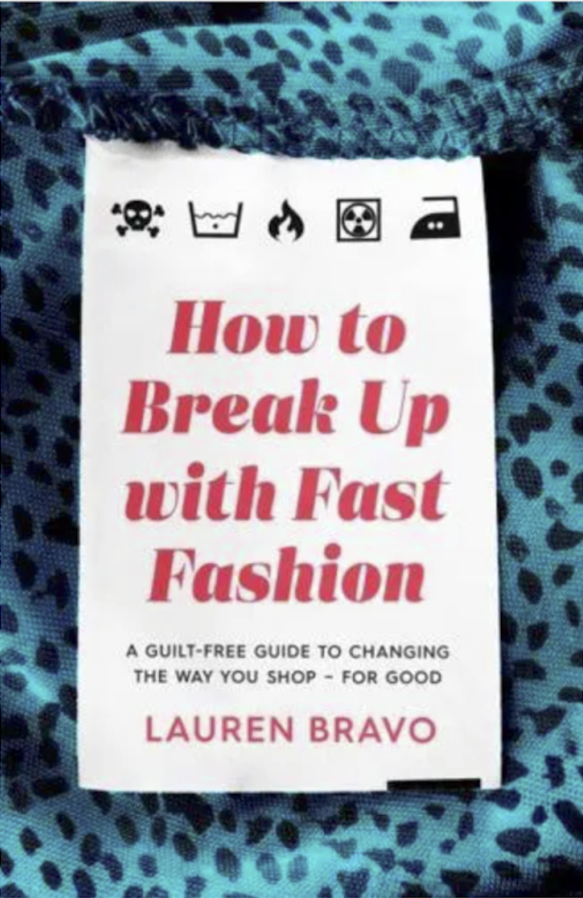

Literature Review
Key Texts Shaping Our Understanding
Core Research
Our research draws from behavioral psychology, sustainable fashion studies, and consumer behavior analysis to understand the mechanisms behind impulse purchasing and potential interventions.

Key Insights
- 52 micro-collections per year create constant obsolescence
- 1 in 10 women wear garments only 3 times before discarding
- Fashion operates on "hedonistic" motivations – shopping as entertainment and dopamine hit
- Social media amplifies consumption – users avoid repeating outfits online
"Fast fashion makes latest styles accessible at cheaper prices, pushing more frequent purchases bought for novelty not durability."

Historical & Systemic Analysis
- Pre-1980s: 2–4 annual collections, product-driven production
- Fast fashion capitalizes on identity fluidity and FOMO
- Supply chain flexibility enables disposability culture
- Need for systemic reforms: circularity, eco-materials, policy interventions
"Fast fashion is unsustainable at every stage of the lifecycle—from production to disposal—externalizing costs onto ecosystems and workers."

Consumer Behavior Reality
- Primary purchase drivers: style and price (not ecological factors)
- "Buy fewer, better items" campaigns fail when cheap options exist
- Consumers won't opt for expensive alternatives voluntarily
- Industry must establish new consumer trends around sustainability
"Research shows that primary drivers of clothing purchases are style and price, not ecological or social factors."

Psychological Interventions
- "Retail therapy" exploits vulnerabilities – coping mechanism for stress
- Paradox of choice leads to decision fatigue and dissatisfaction
- Strategy: Wardrobe auditing – inventory what you own first
- Waiting periods before purchases reduce impulse buying
- Key questions: "Do I need this? How often will I wear it?"
"Understanding these psychological triggers is crucial for breaking free from the fast fashion frenzy → more mindful and intentional choices."
Research Synthesis
The literature reveals a consistent pattern: while awareness of fast fashion's environmental impact is growing, behavioral change remains minimal. The gap between intention and action suggests that information alone is insufficient. Our intervention targets the critical moment of decision-making, introducing friction not as punishment but as an opportunity for reflection.